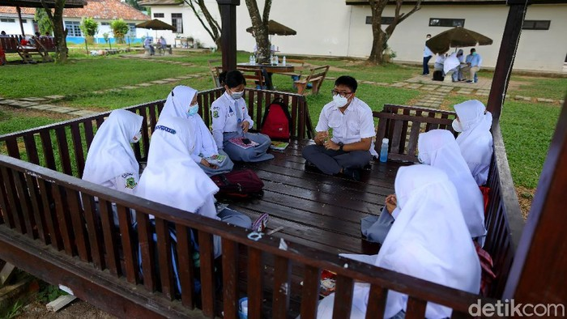
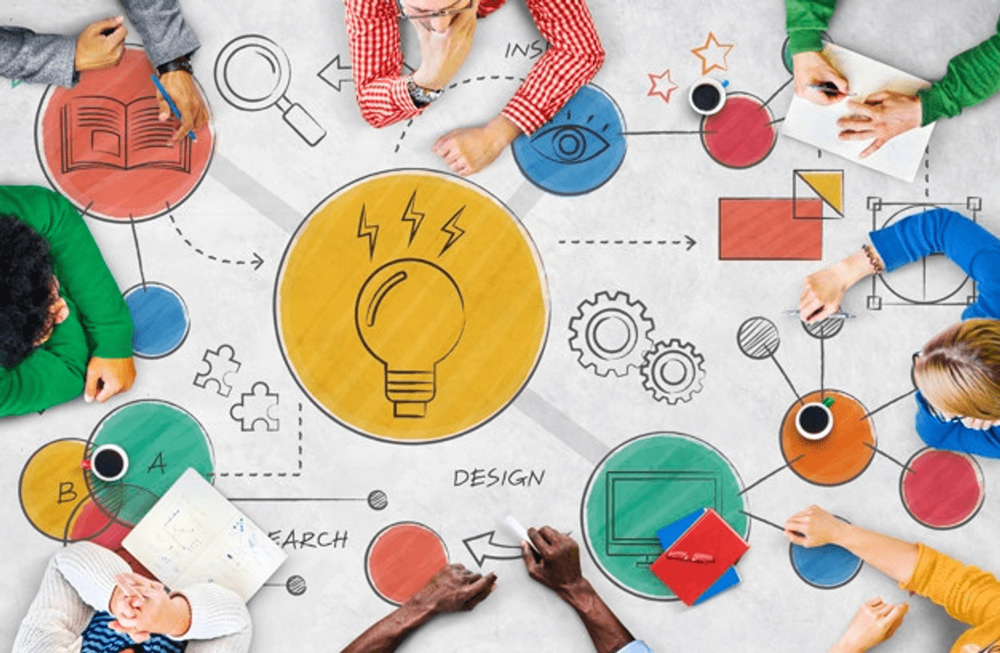
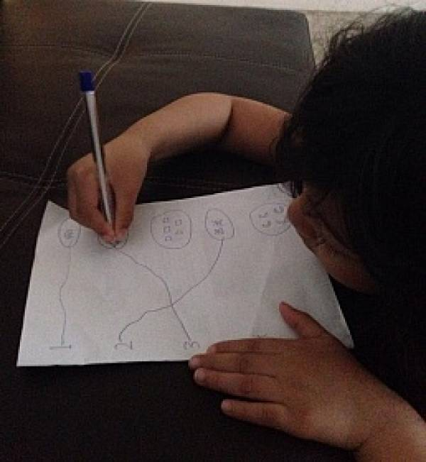

|  |
Refleksi atas Pengalaman dalam Kurikulum Merdeka
Setiap orang mempunyai pengalaman hidup khas, kadang mirip, tetapi bisa juga berbeda sama sekali. Pengalaman --berupa aktivitas fisik dan pikiran merupakan peristiwa yang terjadi dalam realitas kehidupan. Pengalaman dalam realitas terkait langsung dengan keberadaan manusia dalam interaksi sosial keseharian.
|
|  |
Pembelajaran bukanlah mengisi wadah, melainkan menyalakan api.
Fokus pada perubahan perspektif terhadap belajar, dari kewajiban menjadi petualangan yang menarik. Menekankan kepuasan dalam memahami konsep sulit dan menikmati proses.
|
|  |
Ilmu itu bagaikan cahaya yang menerangi kegelapan.
Fokus pada bagaimana setiap tahapan dalam belajar, meskipun sulit, memiliki nilai dan memberikan pelajaran berharga. Menekankan pentingnya menghargai proses daripada hanya terpaku pada hasil akhir.
|